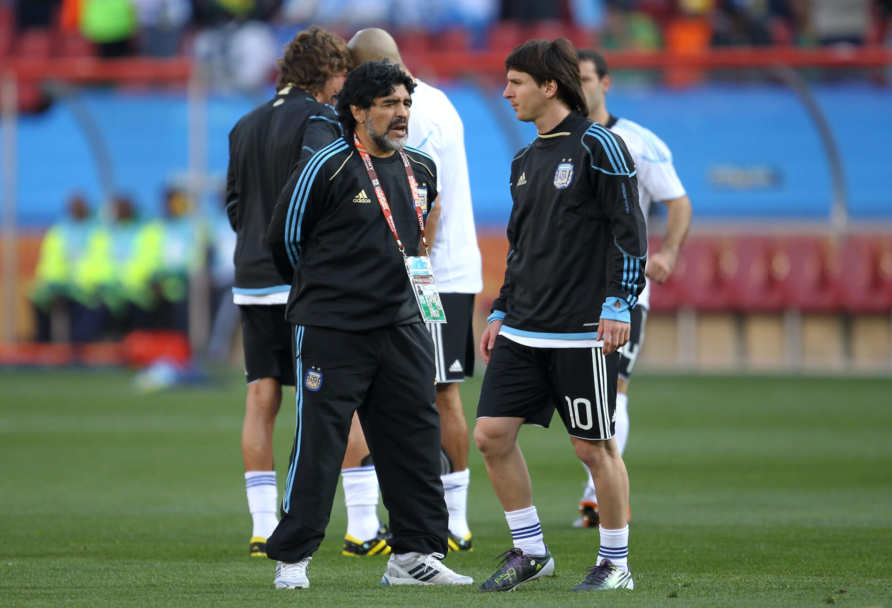

Lionel Messi is now a household name everywhere. After winning the World Cup in 2022, he secured his place as one of, if not the best, footballers in the world. He is seen as an alien on the field, a monster among monsters; however, few people know that Messi’s journey started off with a child who had immense talent and a diagnosis that could cost him his footballing dream.
Messi was born in Rosario, Argentina. Like many other children growing up in the city, football became an integral part of his life. At 5 years old, Messi was already playing for his local club, Grandoli, which was coached by his grandmother and father. Even as a child, two things were clear: Messi had an incredible talent for playing football; however, he was quite small.
He and his family assumed it might just be because he was a late bloomer; however, around 10 years old, doctors found that Messi had a growth hormone deficiency, and he had stopped growing. This condition meant that the body was not producing enough of the hormone that signals the body not only to grow taller, but also to develop physically.
This would mean that his growth would be severely impacted. Not only that, this deficiency could affect his health, especially his cholesterol and cardiovascular health. It was a condition that needed urgent medical attention and would jeopardize not only his footballing career but his life.
Daily hormone injections could help provide the hormones needed for his body, but the cost of treatment was a problem. It cost nearly one thousand dollars per month, far beyond something his family could afford. His father’s insurance could temporarily cover these costs, but the future was uncertain.
Even though Messi was the smallest player on the field, he would still dominate the competition. Against larger opponents, many doubted whether he could play professionally, and it was often the first thing people noticed about him; however, his quick agility, keeping the ball close, and intelligence allowed him to adapt to his weaknesses and play to his strengths: his low center of mass and shiftiness.
As Messi continued to blossom as a footballer, his parents were working day and night to help pay for his treatment in the background. His father searched for ways to continue treatment. Many clubs wanted a piece of Messi’s talent, but few were willing to pay for the medical care and take the risk.
His family realized that there were only two choices: stay in Argentina and risk losing his opportunity for treatment, or travel to Spain, where clubs had the resources to fund youth footballers and take the chance.
At 13 years old, the family decided on the latter. Messi moved from Argentina to Spain after completing a successful trial with the club. It became the one club that was willing to fund the treatment and develop Messi as a player. Messi had to leave behind his whole life at 13 years old: his friends, family, and hometown to pursue a dream in a new country.
Messi had to adjust to a new language, culture, the pressure to play his best—especially with the club funding his expensive treatment—and being by himself. He continued to train against players who were bigger and stronger than he was despite having hormone injections.
He would eventually reach 5 ft 7 in, a height shorter than most professional footballers, but enough to allow his natural talent to flourish on the pitch. Although he was never the biggest or tallest, he learned that his stature didn’t define his performance.
Messi would go on to become one of the most influential and successful footballers in the world, beloved by the whole world. He showed that your differences didn’t define your limits and that just because he was smaller than his peers didn’t mean that he didn’t have what it took to become the best of the best. Before the multiple trophy cabinets lined up with international awards, there was a young boy at a medical appointment with financial uncertainty, dreams of becoming a footballer, and what seemed like an insurmountable obstacle in front of him.
Many saw a boy who was too small, not capable of playing on the biggest stage.
Barcelona saw a player worth investing in.
“Messi never stopped believing in that boy.”
Messi never stopped believing in that boy.
Support
Resources & Support
If this story resonated with you, these organizations provide reliable information about childhood growth hormone deficiency and mental health support.
Broad Shoulders Initiative is not a crisis service, medical provider, or therapy provider. If support feels urgent, please contact emergency services, a trusted adult, a school counselor, or a licensed professional.
References
Sources
- FC Barcelona Players. “Lionel Andrés Messi Cuccitini.” (external link)
- Olympics. “Lionel Messi: Biography, Competitions, Wins and Medals.” (external link)
- Olympics. “How Many Teams Has Lionel Messi Played For? Know Them All.” (external link)
- FIFA. “Lionel Messi: Stats, Quotes, Highlights, Trivia and Quiz.” (external link)
- Inside FIFA. “Marquinho Mesmerising on Messi's Pathway.” (external link)
- MedlinePlus. “Growth Hormone Deficiency in Children.” (external link)
- Great Ormond Street Hospital. “Growth Hormone Deficiency.” (external link)
- MedlinePlus Genetics. “Isolated Growth Hormone Deficiency.” (external link)